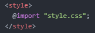
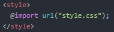

- link와 import에 대해 알아보기
오늘은 'link'와 'import'에 대해 알아보려고 합니다.
사실 'link'에 대해서는 지난번에 이미 공부한 적이 있습니다.
'link'와 'import'를 이용하면 수많은 각각의 웹 페이지의 css 코드를 한 번에 수정할 수 있게 됩니다.
즉 불필요한 반복을 줄임으로써 코드의 유지, 보수를 좀 더 쉽게 할 수 있습니다.
'link'에 대한 설명은 지난번에 배운 내용으로 대체하겠습니다.
이번에는 'import'를 이용해 아래 3개 페이지의 제목을 파란색으로 바꿔보겠습니다.
각각의 페이지에 다음과 같이 코드를 작성해 주면 됩니다.
 또는 
만약 .css 파일이 .html 파일과 같은 디렉터리 내에 있다면 첫 번째와 같이 작성하면 됩니다.
그런데 서로 다른 디렉터리에 있거나 외부 링크를 가져올 때는 두 번째와 같이 'url'을 사용하면 됩니다.
단순히 코드만 다를 뿐이지 결과는 'link'를 사용했을 때와 같습니다.
오늘은 여기까지 하겠습니다.
내일도 화이팅!